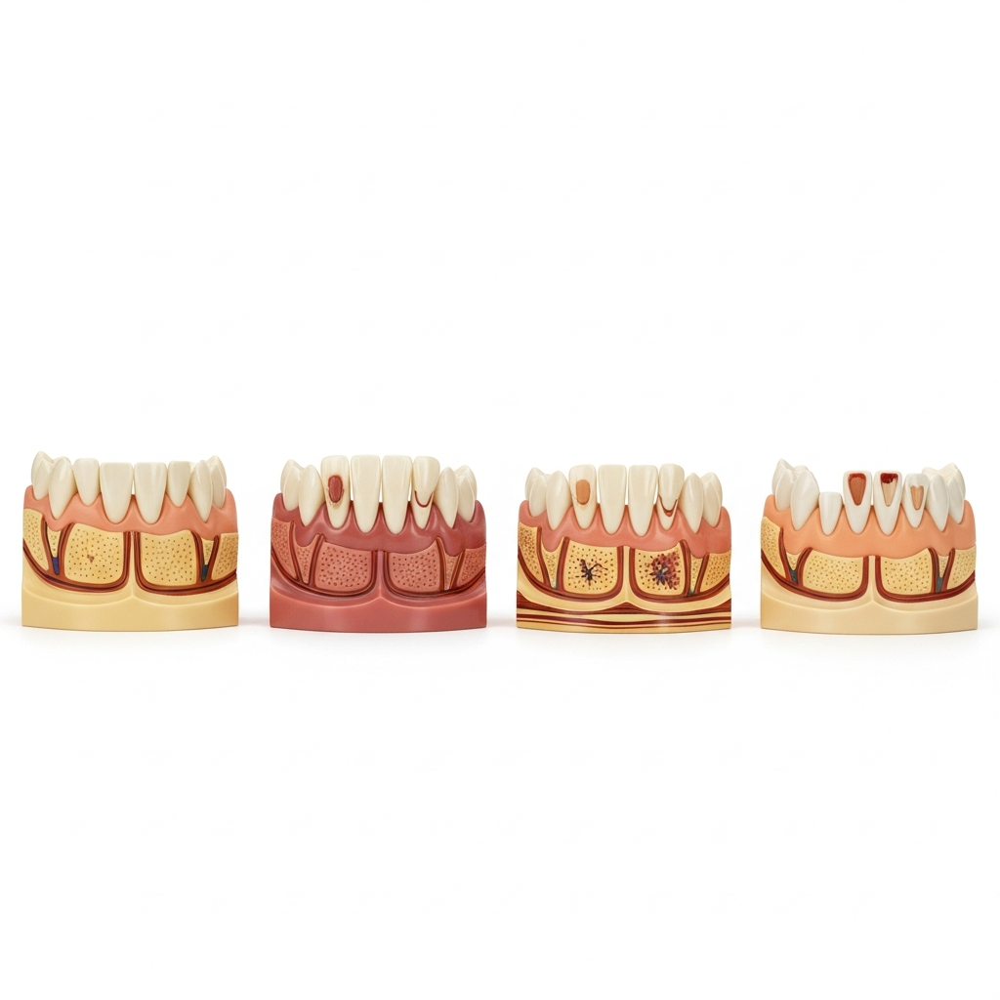
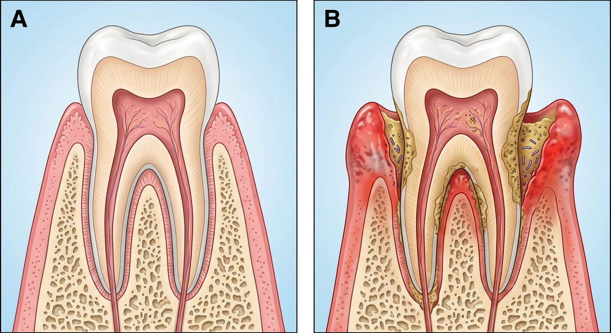
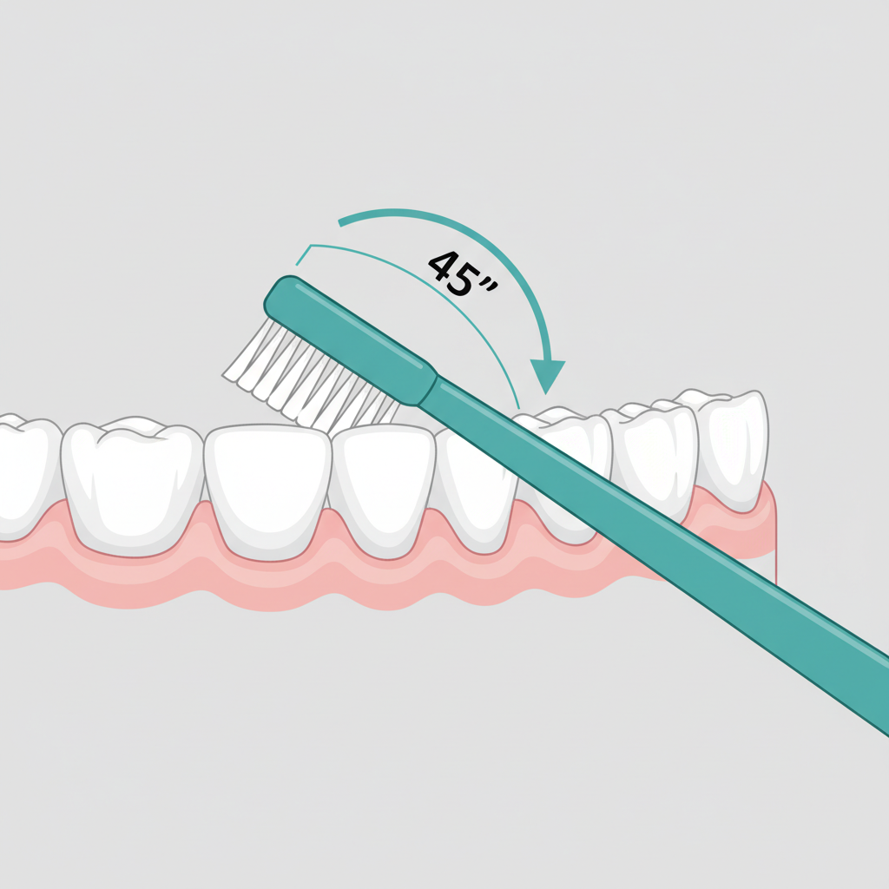

잇몸병 초기 증상부터 4단계 진행 과정, 올바른 양치법, 치과 방문 기준까지 총정리
양치질을 하다가 거품에 피가 섞여 나온 경험, 한 번쯤은 있으실 겁니다. 사과를 베어 물었을 때 과육에 붉은 자국이 남거나, 치실을 사용한 뒤 잇몸에서 피가 비치는 것도 마찬가지입니다. 대부분은 "칫솔이 너무 세서 그런가 보다" 하고 대수롭지 않게 넘깁니다.
그런데 이 잇몸 출혈이 한두 번이 아니라 며칠째, 때로는 몇 주째 반복된다면 이야기가 달라집니다. 칫솔 자극과 상관없이 잇몸에서 피가 나는 것은 잇몸 조직 안쪽에 염증이 자리 잡고 있다는 뜻일 수 있습니다. 실제로 잇몸에서 피가 반복적으로 나는 것은 치주질환이 보내는 가장 이른 경고 신호 중 하나입니다.
치주질환의 가장 까다로운 특성은 초기에 통증이 거의 없다는 점입니다. 아프지 않으니 병원에 갈 이유를 느끼지 못하고, 그 사이 염증은 잇몸 아래 뼈까지 번져갑니다. 건강보험심사평가원 통계에 따르면, 치주질환(치은염 및 치주질환)은 2023년 기준 외래 다빈도 질환 1위로 약 1,700만 명이 진료를 받았습니다. 한국 성인 3명 중 1명 이상이 해당된다는 의미입니다.
더 중요한 사실이 있습니다. 성인이 치아를 잃는 가장 큰 원인은 충치가 아니라 치주질환입니다. 충치는 치아 자체가 손상되는 질환이지만, 치주질환은 치아를 붙잡고 있는 잇몸과 뼈가 무너지는 질환입니다. 기둥이 아무리 튼튼해도 지반이 꺼지면 건물이 무너지듯, 치아 자체는 멀쩡해도 이를 지탱하는 조직이 파괴되면 치아는 저절로 빠지게 됩니다.
치주질환이란, 치아를 둘러싸고 있는 잇몸(치은)과 잇몸뼈(치조골)에 세균성 염증이 발생하여 치아 지지 조직이 점진적으로 파괴되는 질환입니다. 초기에 발견하면 간단한 치료로 회복할 수 있지만, 방치하면 치아 상실로 이어질 수 있습니다.
잇몸에서 피가 나는 원인은 크게 두 가지로 구분됩니다. 하나는 외부 자극에 의한 일시적 출혈이고, 다른 하나는 잇몸 내부 염증에 의한 지속적 출혈입니다. 원인에 따라 대응 방법이 완전히 달라지므로, 자신의 출혈이 어떤 유형에 해당하는지 먼저 파악하는 것이 중요합니다.
일시적 출혈은 물리적 자극이 원인입니다. 칫솔모가 너무 딱딱한 경우, 치실을 처음 사용하기 시작한 경우, 딱딱한 음식(마른 오징어, 견과류 등)에 잇몸이 긁힌 경우, 보철물이나 교정 장치가 잇몸에 닿는 경우 등이 여기에 해당합니다. 이러한 출혈은 원인을 제거하면 보통 2~3일 이내에 자연스럽게 멈춥니다.
지속적 출혈은 잇몸 내부의 염증 반응에서 비롯됩니다. 치태(플라크)가 잇몸과 치아 사이에 축적되면 세균이 번식하면서 잇몸 조직에 염증이 발생합니다. 염증이 생긴 부위의 혈관은 확장되고 벽이 얇아지기 때문에, 양치질이나 음식물 같은 가벼운 자극에도 쉽게 출혈이 발생합니다. 이 경우 칫솔을 바꿔도, 양치를 부드럽게 해도 출혈은 멈추지 않습니다.
잇몸 출혈을 유발하는 그 밖의 원인도 있습니다. 임신 중 호르몬 변화로 잇몸이 민감해지는 임신성 치은염, 혈액 희석제(아스피린, 와파린 등)의 장기 복용, 비타민 C 또는 비타민 K 결핍, 당뇨나 백혈병 같은 전신 질환이 대표적입니다. 이런 요인이 있는 경우에는 치과 검진과 함께 내과적 관리도 병행해야 합니다.
잇몸 출혈이 2주 이상 반복된다면, 원인이 무엇이든 치과 검진을 받아보는 것이 바람직합니다. 특히 양치 시 매번 피가 섞여 나오거나, 자고 일어났을 때 입안에서 피 맛이 느껴진다면, 이는 잇몸병 초기 증상일 가능성이 높습니다.
치주질환은 하루아침에 찾아오지 않습니다. 수개월에서 수년에 걸쳐 서서히 진행되며, 단계에 따라 증상의 심각도와 치료 난이도가 크게 달라집니다. 각 단계의 특징을 알아두면 자신의 잇몸 상태를 가늠하는 데 도움이 됩니다.
| 단계 | 주요 증상 | 잇몸뼈 상태 | 치료 방향 |
|---|---|---|---|
| 1단계 치은염 |
잇몸 부기, 양치 시 간헐적 출혈, 잇몸색 변화 | 손상 없음 | 스케일링 + 양치법 교정으로 완치 가능 |
| 2단계 초기 치주염 |
출혈 빈도 증가, 치주낭 형성(4mm 이상), 가벼운 구취 | 침범 시작 | 치석 제거 + 치주 소파술 |
| 3단계 중등도 치주염 |
치아 흔들림, 시린 증상, 잇몸 퇴축, 심한 구취 | 뚜렷한 골소실 | 치주 수술, 골이식 등 적극적 치료 |
| 4단계 진행된 치주염 |
심한 동요, 고름, 씹을 때 통증, 자연 탈락 | 절반 이상 소실 | 발치 후 임플란트 등 대체 치료 |
1단계 치은염은 잇몸에만 염증이 국한된 상태입니다. 잇몸이 약간 부어오르고 색이 붉어지며, 양치 시 가끔 피가 납니다. 이 단계가 치료의 골든타임입니다. 잇몸뼈에는 아직 손상이 없으므로, 치과에서 스케일링을 받고 올바른 양치법을 실천하는 것만으로 완전히 정상 상태로 되돌릴 수 있습니다.
2단계 초기 치주염부터는 염증이 잇몸뼈까지 번지기 시작합니다. 잇몸과 치아 사이에 치주낭이라 불리는 주머니가 형성되는데, 깊이가 4mm를 넘으면 일반 칫솔로는 내부의 치태와 치석을 제거하기 어렵습니다. 아직 뼈 손상이 경미하기 때문에 적절한 치료를 받으면 더 이상의 진행을 막을 수 있습니다.
3단계 중등도 치주염에서는 잇몸뼈의 소실이 눈에 띄게 나타납니다. 치아를 받치고 있던 뼈가 줄어들면서 치아가 흔들리기 시작하고, 잇몸이 내려앉아 이가 길어 보이는 퇴축 현상이 나타납니다. 치아 뿌리가 노출되면서 찬 음식이나 찬 바람에 시린 증상이 동반됩니다.
4단계 진행된 치주염은 잇몸뼈의 절반 이상이 소실되어 치아를 더 이상 유지하기 어려운 상태입니다. 치아가 손가락으로도 흔들리고, 잇몸 사이에서 고름이 나오며, 심한 경우 치아가 저절로 빠지기도 합니다. 이 단계에 이르면 발치를 피하기 어렵습니다.

건강한 잇몸은 연한 분홍색이며, 치아에 단단히 밀착되어 있고, 양치 시 피가 나지 않습니다. 탄력이 있어 손가락으로 눌러도 금방 원래 형태로 돌아옵니다. 반대로, 염증이 있는 잇몸은 붉거나 자줏빛을 띠고, 부어 있으며, 가벼운 자극에도 쉽게 출혈이 발생합니다.
아래 항목을 확인해 보십시오. 2개 이상 해당되는 경우, 치과 검진을 통해 잇몸 상태를 확인해 보시는 것이 좋습니다.
잇몸 상태 자가 확인
해당 항목이 2개 이상이면 치과 방문을 고려해 주십시오.
위 항목 중 마지막 두 가지 — 치아 간격 벌어짐, 잇몸에서 고름 — 에 해당하는 경우에는 치주염이 상당히 진행되었을 가능성이 있습니다. 이런 증상이 확인된다면 미루지 말고 가까운 치과를 방문하시기 바랍니다.

치주질환 예방의 핵심은 치태(플라크) 관리입니다. 치태는 음식 찌꺼기가 아닙니다. 구강 내 세균이 타액의 단백질과 결합하여 형성하는 끈적한 세균막으로, 양치 후 불과 4~12시간이면 다시 생성됩니다. 이 치태가 48시간 이상 방치되면 타액 속 칼슘과 결합하여 딱딱한 치석으로 변합니다. 치석은 칫솔로 절대 제거되지 않으며, 반드시 치과에서 스케일링을 받아야 합니다.
바스법(Bass method) 양치는 치주질환 예방에 가장 효과적인 칫솔질 방법으로 널리 권장됩니다. 칫솔모를 잇몸과 치아 경계면에 45도 각도로 기울여 놓고, 좌우로 세게 문지르는 것이 아니라 제자리에서 짧게 진동하듯 떨어주는 것이 핵심입니다. 한 부위에 10회 정도 진동을 준 뒤 다음 부위로 이동하며, 바깥쪽, 안쪽, 씹는 면을 모두 닦습니다. 전체 양치 시간은 최소 3분 이상이 권장됩니다.
많은 분이 양치만 잘하면 된다고 생각하지만, 칫솔이 닿지 않는 곳이 있습니다. 바로 치아와 치아 사이입니다. 치주질환은 이 치간 부위에서 가장 먼저 시작되는 경우가 많습니다. 치실을 C자 모양으로 치아에 감싸듯 밀착시킨 뒤 위아래로 부드럽게 당겨주면 됩니다. 하루 한 번, 취침 전 사용이 권장됩니다.
정기 스케일링은 양치와 치실로도 제거되지 않는 치석을 전문 장비로 제거하는 시술입니다. 건강보험이 적용되어 만 19세 이상 성인은 연 1회 적은 본인부담금으로 시술 받을 수 있습니다. 스케일링 후 일시적으로 이가 시리거나 벌어진 느낌이 들 수 있지만, 이는 치석이 치아 사이를 메우고 있던 것이 제거되면서 나타나는 정상적인 반응이며, 1~2주 내에 대부분 사라집니다.

흡연은 치주질환의 가장 강력한 위험 요인 중 하나입니다. 미국 질병통제예방센터(CDC)와 대한치주학회 자료에 따르면, 흡연자의 치주질환 발생 위험은 비흡연자 대비 2~6배 높습니다. 하루 흡연량이 많을수록, 흡연 기간이 길수록 위험도는 비례하여 증가합니다.
담배 연기에 포함된 니코틴은 잇몸 혈관을 수축시킵니다. 혈류가 줄어들면 잇몸으로 공급되는 산소와 영양분이 감소하고, 면역세포의 활동도 둔화됩니다. 그 결과 세균에 대한 잇몸의 방어력이 떨어지고, 염증이 더 빠르게 진행됩니다.
흡연이 치주 건강에 미치는 영향 중 특히 위험한 점이 있습니다. 바로 잇몸 출혈이 줄어든다는 것입니다. 니코틴에 의해 혈관이 수축되면 염증이 있어도 출혈이 잘 나타나지 않습니다. 그래서 흡연자는 잇몸병 초기 증상을 놓치기 쉽고, 진단 시점에는 이미 상당히 진행된 경우가 많습니다.
흡연자는 치주 치료를 받더라도 회복 속도가 느리고 재발률이 높습니다. 금연은 잇몸 건강을 위한 가장 확실한 투자입니다. 금연 후 수주 내에 잇몸 혈류가 개선되기 시작하며, 치주 치료에 대한 반응도 비흡연자 수준에 가까워집니다. 전자담배 역시 니코틴이 포함되어 있어 안전하지 않습니다.
결론부터 말씀드리면, 잇몸에서 피가 2주 이상 반복되거나, 칫솔을 부드러운 것으로 교체하고 양치법을 바꿔봐도 출혈이 멈추지 않는다면 치과 검진을 받으실 것을 권장합니다.
치과에서는 먼저 치주낭 검사(프로빙)를 시행합니다. 눈금이 표시된 가느다란 치주탐침을 잇몸 틈새에 넣어 치주낭 깊이를 측정하는 검사입니다. 건강한 잇몸의 치주낭 깊이는 1~3mm이며, 4mm 이상이면 치주염의 시작, 6mm 이상이면 중등도 이상의 치주염으로 판단합니다. 이 검사는 통증이 거의 없으며 소요 시간도 약 10~15분 정도입니다.
치주낭 검사와 함께 파노라마 방사선 촬영이나 치근단 촬영을 통해 잇몸뼈(치조골)의 상태를 확인합니다. 잇몸뼈가 얼마나 소실되었는지, 어느 부위가 가장 심한지를 영상으로 확인할 수 있습니다.
진단 결과에 따라 치료 계획이 달라집니다. 치은염 단계라면 스케일링과 양치 교육만으로 회복이 가능합니다. 초기~중등도 치주염은 치주 소파술(큐렛)을 시행합니다. 국소마취 후 진행하며, 시술 시간은 부위에 따라 30분~1시간 정도입니다. 진행된 치주염의 경우에는 치주 판막 수술이나 골이식 수술이 필요할 수 있습니다.
치주 치료 후에는 3~6개월 간격의 정기 관리(유지 치료)가 매우 중요합니다. 치주질환은 한 번 진행되면 완전한 원상복구가 어려운 질환이므로, 재발 방지를 위한 지속적인 관리가 치료의 일부입니다.
치주질환은 조기에 발견할수록 치료가 간단하고 비용 부담도 적습니다. 1단계 치은염은 스케일링으로 해결할 수 있지만, 3~4단계 치주염은 수개월간의 치료가 필요하며 비용 부담이 크게 늘어날 수 있습니다.
Q. 양치할 때만 피가 나도 치주질환인가요?
양치 시에만 출혈이 발생하더라도 2주 이상 반복된다면 치은염 초기일 가능성이 있습니다. 치은염은 아직 잇몸뼈에 손상이 없는 단계이므로, 이 시점에 스케일링을 받으면 완전히 회복할 수 있습니다. 출혈이 반복되면 가볍게 여기지 마시고 검진을 받아보시기 바랍니다.
Q. 스케일링을 받으면 이가 시리거나 벌어지나요?
치석이 치아 사이와 잇몸 경계를 메우고 있던 것이 제거되면서 일시적으로 이가 시리거나 벌어진 느낌이 들 수 있습니다. 이는 본래의 치아 형태가 드러난 것이며, 잇몸이 건강해지면 1~2주 내에 대부분 개선됩니다. 오히려 치석을 방치하면 잇몸뼈가 지속적으로 파괴됩니다.
Q. 잇몸병은 유전인가요?
유전적 소인이 치주질환 감수성에 영향을 줄 수 있다는 연구 결과가 있습니다. 그러나 치주질환의 주된 원인은 치태 축적과 생활 습관(흡연, 양치 부실, 스트레스 등)입니다. 부모님이 잇몸 질환으로 치아를 잃은 경험이 있다면, 정기 검진 주기를 6개월로 줄이고 치태 관리에 더 신경 쓰시는 것을 권장합니다.
Q. 잇몸 출혈이 있을 때 양치를 해도 되나요?
오히려 양치를 중단하면 안 됩니다. 잇몸 출혈의 원인은 대부분 치태 축적에 의한 염증이므로, 양치를 멈추면 치태가 더 쌓여 염증이 악화됩니다. 부드러운 모의 칫솔(소프트 또는 울트라소프트)을 사용하여 잇몸 경계면을 부드럽게, 그러나 꼼꼼히 닦아주는 것이 좋습니다.
Q. 전동칫솔과 일반 칫솔, 잇몸 건강에는 어떤 것이 더 좋은가요?
전동칫솔은 일정한 진동수와 회전으로 치태를 효과적으로 제거할 수 있다는 장점이 있습니다. 다만 올바른 각도(45도)와 충분한 시간(3분 이상)을 지킨다면 일반 칫솔로도 충분한 치태 관리가 가능합니다. 중요한 것은 도구의 종류보다 올바른 양치 방법과 꾸준한 실천입니다.
용인 동백 유디치과
잇몸 출혈이 반복되고 있다면
치주 검사를 통해 정확한 상태를 확인해 보시기 바랍니다.
초기에 발견할수록 치료는 간단합니다.
031-546-0051 | 평일 09:30~18:30 / 토 09:30~14:30
더 자세한 정보는 홈페이지에서 확인하실 수 있습니다.
https://claude-old.vercel.app